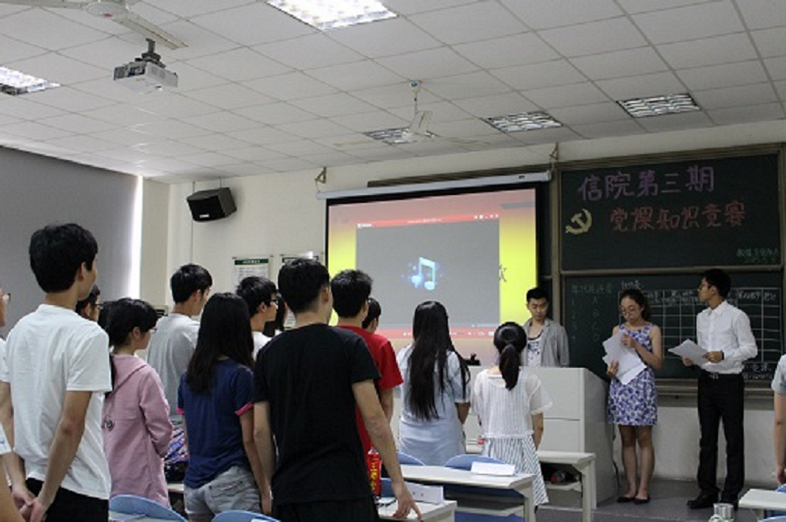
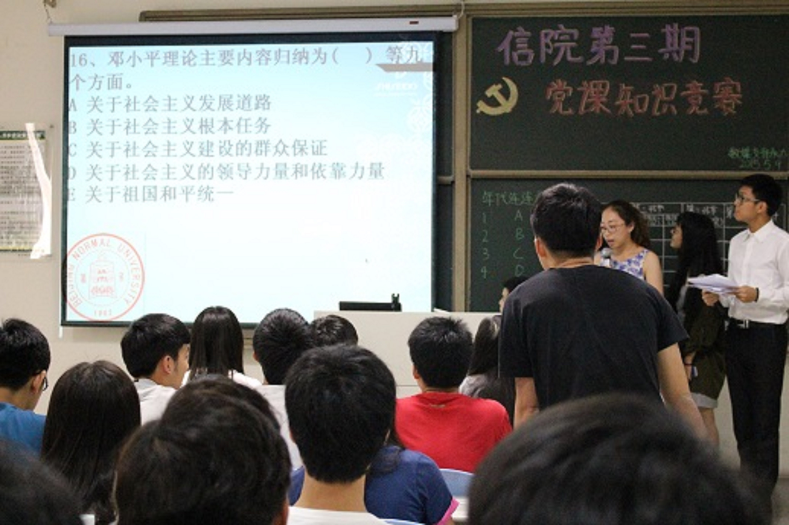
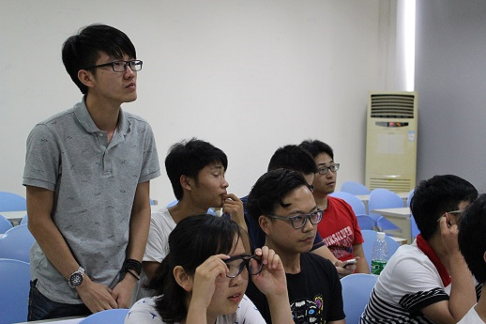
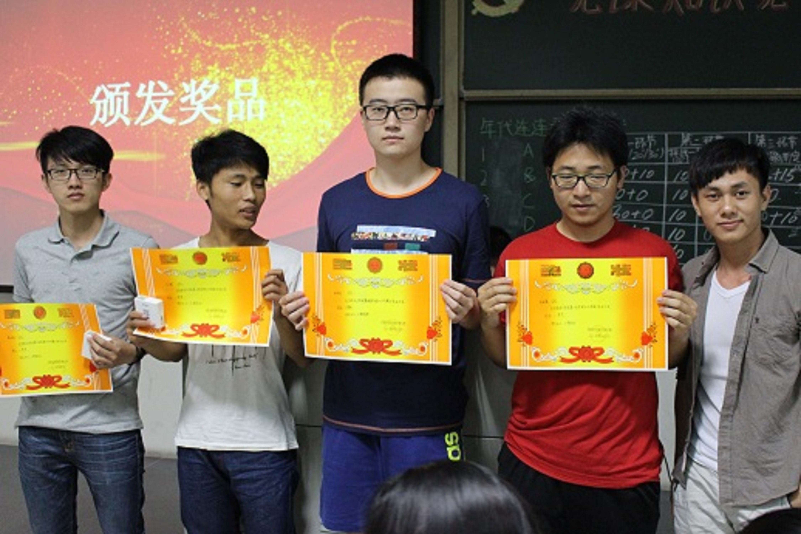

第三期党课知识竞赛取得圆满成功
2015年5月9日下午，我院学生党支部在丽泽楼D101举办了信息技术学院第三期党课知识竞赛。本次竞赛由数媒学生党支部承办，比赛选手来自我院第28期党校培训学员，出席本次竞赛的嘉宾有软件学生党支部书记郭华、数媒学生党支部书记吕敏。

（全体起立唱国际歌）大赛开始前，全体起立，唱国际歌，然后主持人致开幕词，新一期的党课知识竞赛就这样开始了。大赛共分为四个环节：初出茅庐、党课知识全垒打、微信摇一摇、幸运大逆转和演唱赢机会。

（“初出茅庐”环节）在第一环节“初出茅庐”，第一组的精彩回答便引爆全场。一位名叫马志楷的学员选了一道30分的填空题，在主持人读完题目后该同学思考片刻后迅速给出答案，赢得大家的一片“啧啧”惊叹和雷鸣般的掌声。

（“党课知识全垒打”环节）接下来的“党课知识全垒打”环节，选手们的竞争更加激烈，该环节要求每一个挑战题目都有时间限制。继前面两个紧张的环节之后第三环节“微信摇一摇”则显得比较轻松了。微信摇一摇凭的是运气，第一第三组的成员运气都比较好，很快和其他三组拉开分差。第四环节演唱赢机会，各组争相上台表演，一首首动听的红歌回响在教室里。
四轮紧张激烈的角逐过后，主持人宣布了各种成绩。第一组以135的高分夺冠，第三组以115的分数稳居第二，第五组则以95分的成绩获得第三名。

（获奖同学合影）此次竞赛加深了同学们对党的理论的认识和理解，拉近了同学们与党之间的距离，使同学们对党的感情更加深厚，也提升了同学们的思想觉悟。